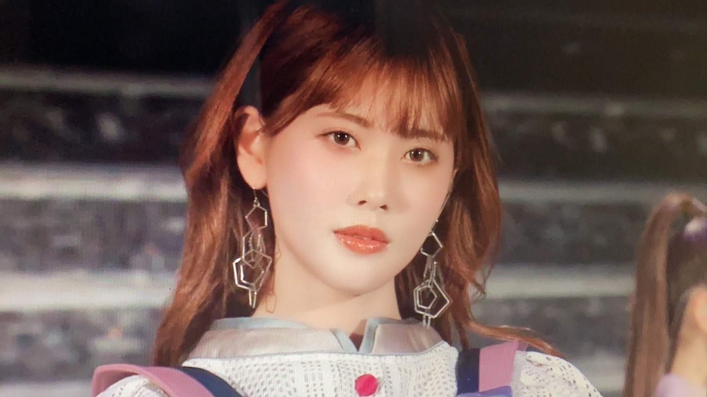
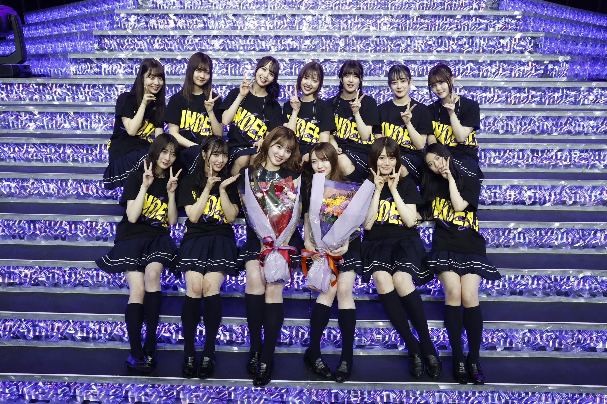
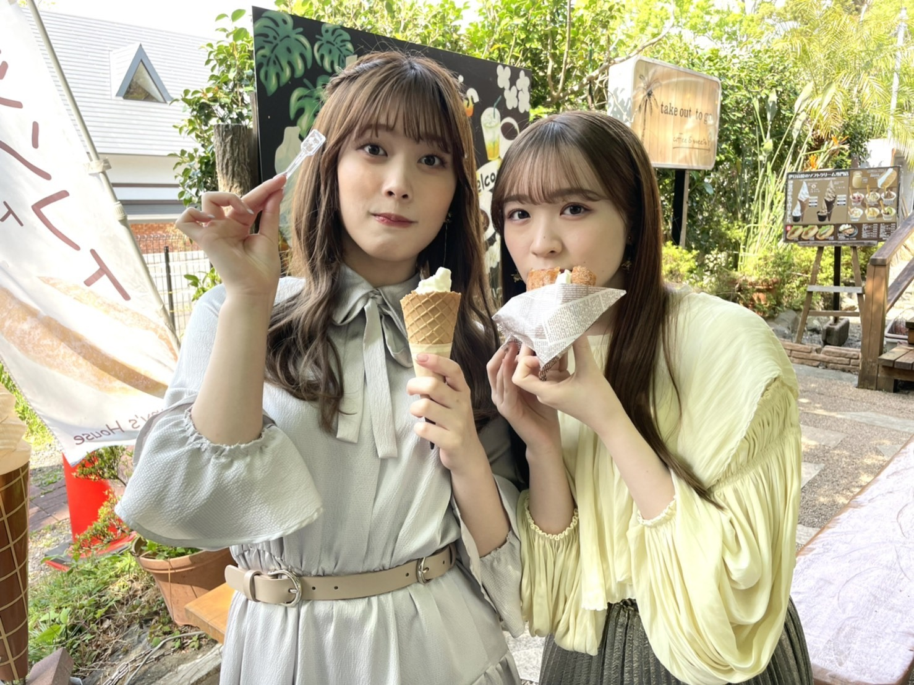
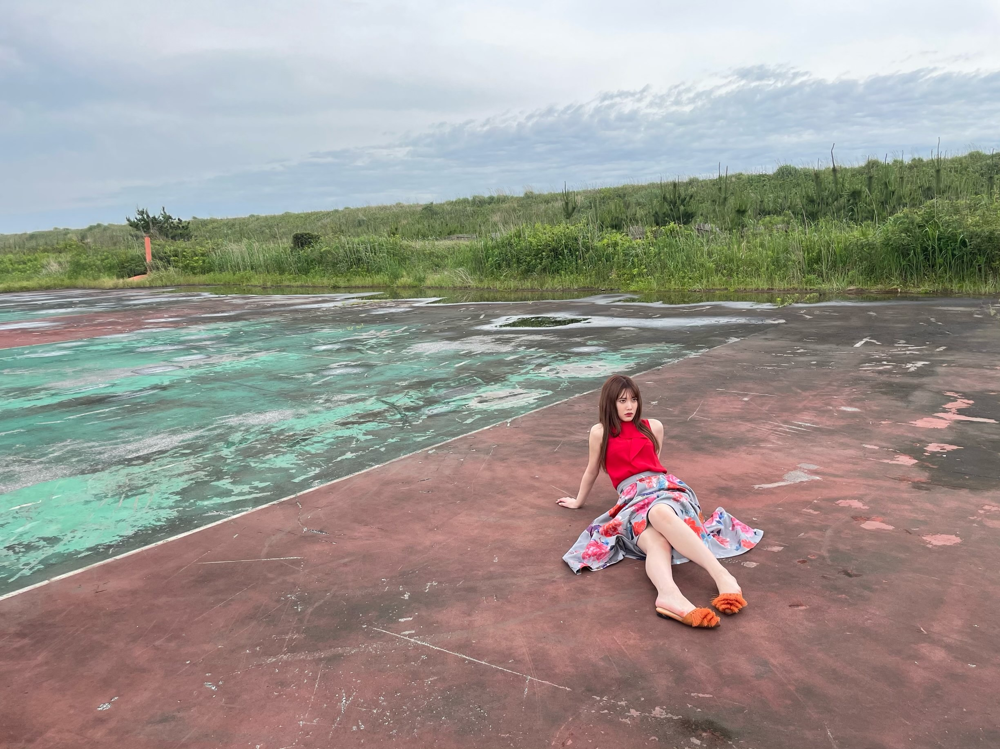

2021/0624Thu今が思い出になるまで
こんばんは！
伊藤純奈です

(てぃーちゃんが送ってくれました)
遅くなりましたが
アンダーライブ2021
配信でみてくださったみなさま
ありがとうございました☺︎
たくさんのリクエストありがとう
ございました〜みなさんと一緒に
作り上げたライブ！という感じがして
よかった！！
最後にまたみんなとの思い出が
たくさんできて嬉しかったな〜
本当にこれからの乃木坂が楽しみだし
外からこれからライブをみれると
思ったらワクワク！
卒業発表をしてからのライブ。
そしてみりあとわたしにとっての
最後のライブ。
最初で最後の2人でユニットを！
「ショパンの嘘つき」を歌わせて
いただきました〜
ずっとやりたかったんだよね。じゅんが
歌でみりあがダンス。
メンバーもスタッフのみなさんも
とっても褒めてくれてうれしかったꪔ̤̥
ずっとずっとみんなの事が愛おしくて
あ〜この人たちに出会えてよかったなあ
乃木坂入ってよかったなあって
心の底から思いました☺︎
そして配信をみてくださったみなさま
本当にありがとうございました！
お花もたくさんありがとうございました！
今までたくさんライブをしてきたけど
これが最後のライブなんだあって今でも
不思議な感じ。振り返ったら色んな事が
あったけど、どれも最高の思い出だし、
自分の好きなことを見つけられた場所だし
感情をありのまま出せる場所だったし
だいすきだったーーー！！！！！！！！

◎「ごめんねFingers crossed」
発売中です！
錆びたコンパスたくさん聞いてください〜！
個人PV「東京の女の子」収録されていますꪔ̤̥

◎EX大衆発売中です

クールに撮って頂きました〜
◎BRODY8月号
舞台組で表紙をやらせて頂きました！
インタビューもよく読んでね〜
◎乃木坂46の「の」
6月27日18時〜！
◎日刊スポーツ 坂道の火曜日
6月29日 掲載して頂きます！
舞台や卒業についてお話したよ〜
松村沙友理さん
卒コンお疲れ様でした♡
送られてきた写真とか動画とかで色々
みたけど本当に綺麗でかわいかった〜！
私はそんな中、Coror of theater「ROSSO」
の稽古ラストパート頑張ってました！
いよいよ27日が初日です☺︎
キャストのみなさん、本当に仲良しで
毎日わいわい楽しくやっております。
みんなかっこいいしなんでも
できる！！すごい！！！！
とんでもなく見応えがあって見てて飽きない
舞台になってます〜〜！
そして、
全公演配信も決まりました！そしてグッズも
たくさん販売されます！
日替わりでキャストの配信特典映像が
毎公演つくのですが私は6月29日 18時公演です！
詳しくはこちらを〜↓
それでは！
新制服の写真でばいばい！
2021/06/24 20:42


コメント(455)
いつまでも純奈さんが大好きです！！！
アンダーライブ楽しかったよっ。
やっぱりあなたは歌姫だわ。
本当に乃木坂に出会えてよかった！
伊藤純奈さんという1人の女性に出会うことができてよかった！
これからも全力で応援させて戴きます！
純ちゃん好きだぁぁぁ！
アンダーライブほんとにおつかれさまでした！
純奈ちゃんもみりあちゃんもほんとに輝いててライブ始まってから終わるまで涙がとまらなかったです！
素敵なライブでした！！おつかれさまでした！
錆びたコンパス毎日聴いてます！！
28日ROSSOみにいきます！！たのしみです！！
純奈ちゃん今日もだいすきです！☺︎︎
たくさん写真ありがとう！！
この前初ミーグリだったんだけど、想いが伝えられてよかった！また話したいなあ
舞台も頑張ってね！大好きだよ！
あと少しの乃木坂、思いっきり楽しんで！
大大大好き！
アンダラ最高でした。とくにショパン、本当に観れて良かったです。
僕は「純奈さんのソロ歌唱が聞きたい」とリクエストしていたので夢を叶えてくれて本当にありがとうございます。
大好きです。
ROSSO楽しみにしています！
くろぴょん
アンダラお疲れ様！本当に綺麗でした。世界一キラキラなアイドル！ずっと大好きだよ！
ROSSO楽しみにしてます！☺︎☺︎☺︎
ショパンふたりの相性よすぎてずっと泣いてたよ。
お花もみてもらえたようでよかった☺︎
ROSSO観にいけれんけど配信でみるけん感想とかミーグリで直接言うね☺️
ラストスパート無理せず頑張ってね！！！！
アンダラ楽しかったです！最後のライブで輝いている純奈を見ることができて最高でした。ショパンの嘘つきの二人、新しいミュージカル見ているみたいで感動して思わず泣きました。直接最後を見届けられないのはとても残念だったけど、二人が満足で終われたなら私たちも悔いはないです。ライブで輝いている純奈が大好きでした。お疲れ様でした。最高のライブをありがとう。
さて会場でライブが見れなかった分、ROSSOをしっかり生で見に行きます。一年以上ぶりの舞台。すごく楽しみにしています！(台風が近づいていて少し心配ですが…)。稽古も本番も頑張ってください！
そのほか雑誌もラジオもちゃんとチェックします！
乃木坂46のラストスパートも楽しんで活動していただけたら私たちも嬉しいです！
暑い中が続くのでどうかご自愛ください！次のブログ更新も楽しみにしてます！
これからもずっとずっと大好きです！
益々の活躍を祈ってます。
アンダーライブ、本当に本当に素敵でした！
会場に行きたい気持ちは大きかったけどメンバーさんたちと集中してパフォーマンスできたならそれはそれでよかったのかな、と思います。
今回初めて連名でもお花出させてもらいました。ミーグリでその件話してくれてありがとうね！
EX大衆もBRODYも買ったよ！綺麗な純奈ちゃん、舞台への思いを語ってくれた純奈ちゃん、1ページ1ページが大切な思い出になっていくみたい。
残りの時間、たくさんのアイドル伊藤純奈を見せてくれたら嬉しい！
そして舞台ROSSO！楽しみにしてるよ〜♪
たくさん見に行くのでたくさん楽しんでね！
今日もありがとう！
舞台も頑張ってください。
舞台楽しみです。
アンダラおつかれさまでした！！
本当に素敵だった、！！！いつまでも最高の推しですありがとう
7/31のミーグリ全当したよ！！
ちまちゃんとのペアだよね楽しみにしてます！！
やっと！！最初で最後のじゅんちゃんとのミーグリ(T_T)
卒業してもずっとだいすきだよ！！
ありがとうじゅんちゃん！
応援してる！！大好き！！！！
BRODY読んだよ〜☻
純奈ちゃんが卒業して何をしていくのか想像できないけど、
これからもずっと、ファンとして応援したいな
て思ったよ
あと、ROSSOは目に焼き付けようと思う！
ROSSO超楽しみだよ〜
初日と最終日行くよ！
ロックな赤ずきんて、絶対好きだな〜笑笑
本当に楽しみ！！！！
ミーグリで感想伝えるね！
健康には気をつけてね〜
ライブできらっきらに輝くじゅんなちゃんが見れて嬉しかった！
EX大衆もBRODYも読みました！
色んなお仕事で活躍してるじゅんなちゃんを見れると思ったらこの先が楽しみです
またミーグリでおはなしできるの楽しみにしてます☺️
じゅんなちゃん大好き〜！！
舞台は見に行けないけど、頑張って下さい。
舞台のお稽古毎日おつかれさま〜！！！！
アンダーライブOvertureから号泣して、ほんとに最後なんだなあって改めて実感して大好きなじゅんみりがキラッキラでユニットがあったりシンメだったり嬉しくて幸せな時間はあっという間でした。アイドルになってくれてありがとう！☺︎
ROSSO発表されてからずっと楽しみにしてたので、もうあと2日でわくわくです！久しぶりに生の舞台で、純奈ちゃん見れることも、純奈ちゃん推しのお友達にも会えるきっかけくれてありがとう！！純奈ちゃんが、無事に千秋楽まで楽しく終われますように〜！！
ブログ更新ありがとうございます！
アンダラお疲れ様でした！ じゅんちゃん&みり愛ちゃんがとても輝いていたライブで涙とまりませんでした( •̥ ˍ •̥ )
錆びたコンパスたくさん聴くようにします！ ミーグリも取ったので何年ぶりの握手会に参加しますので楽しみにしてます！
アンダーライブ見たよ！！
ショパンの嘘つきめちゃくちゃかっこよかったよ
舞台応援してます！！
BRODY買ったよ！どの道に進む純奈ちゃんも応援してます！！
れいちゃんずより
追伸：今日も一日お疲れ様！
アンダーライブ最っ高でした！
「ショパンの嘘つき」純奈さんもみり愛さんも最高レベルの歌声とダンスで最高でした！
錆びたコンパスの歌もMVも最高です！
ROSSO頑張って下さい！全力で応援してます！
最後まで楽しく走り抜けてください！全力で応援してます！
ライブおつかれ様でした。
すごくすごく感動しましたし、
大好きな純奈ちゃんのパフォーマンスをたくさん観れて幸せでした。
ミーグリでも伝えさせてもらったけど、
人生の中で観たどのライブより好きなライブでした！！
ありがとうございます。
沢山の素敵な思い出ありがとう(*´ω`*)
舞台ROSSO頑張ってください！！
配信観ます(´,,•ω•,,｀)♡
体調にはきをつけて、元気でたくさんニコニコしてくださいね٩( *˙0˙*)۶
今日も世界一好きだよ。
ex大衆美しかったです。
ROSSO楽しみにしています。
ミーグリで感想言いますね。
改めてアンダラお疲れ様！
まずは、アンダーライブ本当にお疲れ様です！！
終始、画面に集中してた！もうね、『ショパンの嘘つき』も本当に良かった。選曲も良いし、綺麗な歌声とダンスが美し過ぎました。。ギャップにもやられた！！
そして、この前ミーグリ行きました！
次は8/8！楽しみにしてます！！
舞台も楽しみ！！
体調と怪我に気をつけて、頑張って下さい！！
アンダーライブすごく感動したし楽しかったです！最後ってのがほんとうに信じられないくらい嫌です(T ^ T)(T ^ T)(T ^ T)ずっとライブ出てほしい〜〜〜
錆びたコンパスも毎日聞いてるし個人PVも本間に毎日見てます！！！！！
ROSSO配信で見るね！とっても楽しみです＾＾♡
新制服似合いすぎてる！！！かわいい！！！だいすき！！！！！
あと少しで卒業だから噛み締めてね
ショパンの時、やっぱり二期生の表現力すごいなって思った。
今の3,4期生もあのレベルを目指してると思うとワクワクする。
『錆びたコンパス』、今までのアンダー楽曲で1番好き。
れなちさんがセンターなのもめっちゃあってる曲だと思ったし、就活してて落ち込むことあったけど、やっぱり、前のめりに進んだ方が後悔しないよね。
楽しいより、面白いを取りたい。頑張ろう！
ブログ更新ありがとうねぇ〜
ラストライブは最高でした
有観客で見届けたかったけど
配信でも しっかりと応援できたし
まだまだROSSOもありますので
最後まで ついていきますよー
マイブーム レモンイエローぽかったので
黄色お花 贈らせていただきました
思い届けてくれたかな
またミーグリでお話ししてくださいね
楽しみ〜
最後に近づくにつれてどんどん綺麗になってずるいよ...
ブログ更新ありがとう
後少しの乃木坂46の活動頑張ってください！！
ずっと応援しています！
もう少し最初に知れたらと後悔してます、、、
大好きです！！
僕らもとっても幸せです！！！
新しい道になっても応援します！これからも頑張ってください✨
乃木坂好きになってじゅんちゃんに出会えてよかったです！
コメントする